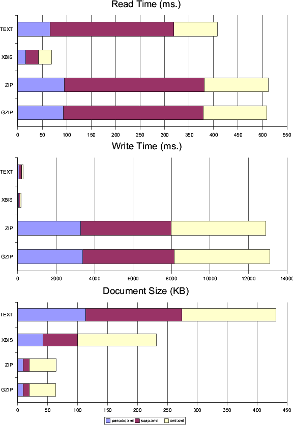
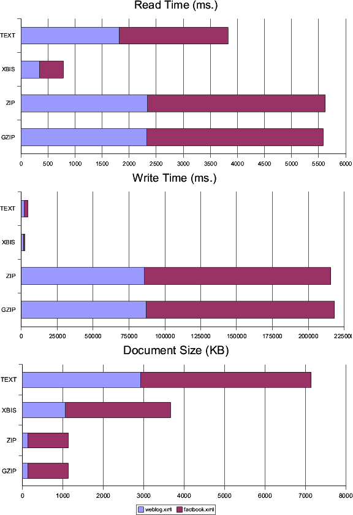
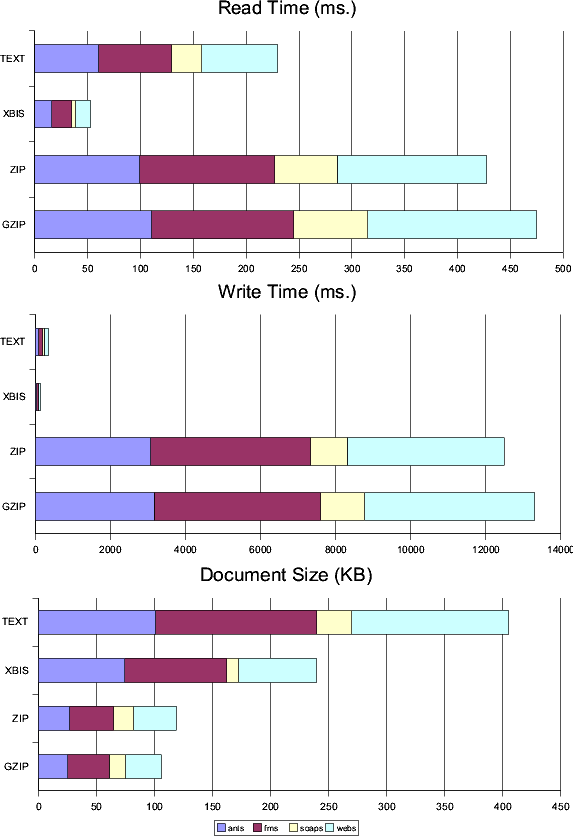
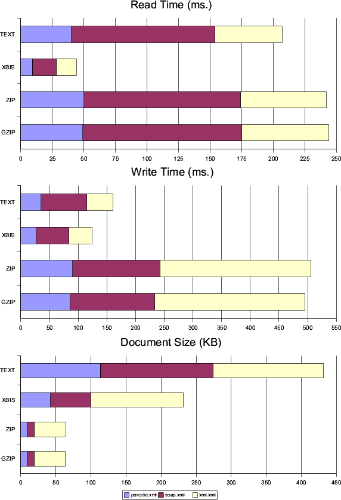
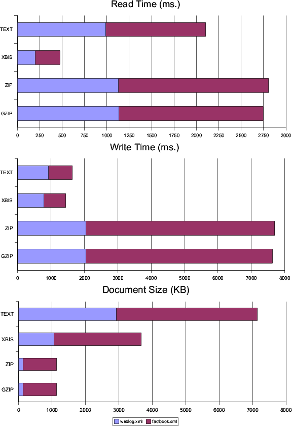
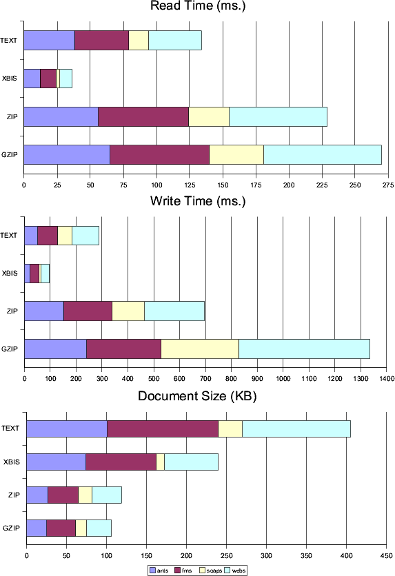

|
|
The current XBIS code includes a test
program for comparing XBIS performance with both text XML and zip/gzip
compression of text, test.RunTest (included in the
/tests directory of the distribution, with source code under the
/build/src directory). This program uses one or more sets of test
data, each consisting of either a single document or a collection of
documents. The test program first reads the current test data set into
memory as an array of bytes, then calls one of four test implementation
classes (test.TextTEXT, TextXBIS, TextZIP, or TestGZIP, as selected by the
first command line argument, which must be "TEXT", "XBIS", "ZIP", or "GZIP").
It requires the SAX2 parser to be specified with a property definition on
the Java command line of the form -Dorg.xml.sax.driver=com.bluecast.xml.Piccolo
(for Piccolo), -Dorg.xml.sax.driver=org.apache.xerces.parsers.SAXParser
(for Xerces), or the equivalent for other parsers. When the test implementation
class is called by the test program it performs the actual tests
and fills measured time values into an array of results, which are
accumulated by the test program across all test data sets and printed at
the end.
Timing Methodology
The actual timing measurements are done
using several passes over the test data set. Each pass may involve
several repetitions of an operation with the test data set. The
elapsed time for each pass is measured, and only the best time is
saved and returned. This technique was adopted in order to obtain
consistent timing results, since average times across even a larger
number of passes showed much more variation than the best pass times,
apparently due to JVM whims.
The general sequence of operations is as
follows for each test implementation:
Parse document from the in-memory
text (as a ByteArrayInputStream), with
processing of SAX2 events by a simple handler that counts different
types of items. This is measured as the basic text parse time, and
also as the input time for the TEXT version of the test.
Parse document a second time, saving
the parse event information to an in-memory store. This allows the
events to be replayed at a fraction of the overhead of a full text
parse, providing more accurate timing results for the following step.
Replay the parse events from the
in-memory store, generating output to memory in the appropriate form for the
particular test. In the case of TEXT this uses JAXP with a null
transformation to generate plain document text output; for GZIP this
uses JAXP with a null transformation streamed to a
java.util.zip.GZIPOutputStream; for XBIS this uses a
org.xbis.SAXToXBISAdapter.
Process the output generated in the
last step to regenerate the SAX2 parser output. In the case of TEXT
this uses a SAX2 parser; for GZIP this uses a java.util.zip.GZIPInputStream
streamed to a SAX2 parser; for XBIS this uses a
org.xbis.XBISToSAXAdapter.
Test Data
The supplied test data sets are broken up into medium and large individual
documents, along with several collections of smaller documents. The
medium documents are:
periodic.xml,
periodic table of the elements in XML. Some attributes, fairly flat
tree (114K bytes).
soap2.xml, generated
array of values in SOAP document form. Heavy on namespaces and
attributes (131K bytes).
Published test results use a third medium
sized file, xml.xml. This is the actual text of the XML
specification, with the external DTD reference removed and all entities defined
in the internal DTD subset. It consists of presentation-style markup with heavy mixed content
and some attributes. This file is not included in the distribution due to
copyright restrictions that prohibit distributing any modified version of the
document.
The large documents are:
weblog.xml,
a log of web page accesses reformatted as XML. Flat structure with
no attributes and generally short character data sequences as
content (2.9M bytes).
factbook.xml,
CIA World Factbook data reformatted as XML. Variable structure with
no attributes and heavy character data content (4.0M bytes).
The collections of small documents are:
ants,
XML configuration files for the Ant build utility from a number of
open source projects (18 documents, 100K bytes total).
fms,
RDF documents from Freshmeat.net (37 documents, 136K bytes total).
soaps,
SOAP request and response documents from an early version of the
SOAP 1.2 specification and from an interoperability test set (42
documents, 30K bytes total).
webs,
web application configuration files from a number of open source
projects (70 documents, 132K bytes total).
Test Results
Current timing results are published on
the IBM developerWorks XML zone, in the article Improve
XML transport performance, Part 2.
As a supplement to the charts supplied in that
article, the three figures below give the results for a test run with the Sun
1.4.1 JVM for Linux (using the Piccolo parser, which tends to deliver the best
performance of the ones I've tested with the Sun JVM). Note that the zip and
gzip performance shown in these test
results is far worse than those from the IBM 1.4.1 JVM. I haven't identified
the cause of the problem, but it appears to be present for both the 1.4.1 and
1.4.2 JVMs from Sun (those are the only ones I've tried).
Figure 1. Medium document performance, Sun 1.4.1 JVM
|  |
Figure 2. Large document performance, Sun 1.4.1 JVM
|  |
Figure 3. Small document performance, Sun 1.4.1 JVM
|  |
The total times are 9.55 seconds for text, 3.44
seconds for XBIS, 247.65 seconds for zip, and 251.20 seconds for gzip. The next
three figures give the results for the same tests, run on the IBM 1.4.1 JVM (also
using the Piccolo parser). These are essentially the same results as shown in
the developerWorks article referenced above, though these include the zip test
results and were run on the final version of the code included in the 0.9.5
release (a slightly later version than was used for the test results published
in the article). The total times in this case are 4.53 seconds for
text, 2.21 seconds for XBIS, 12.18 seconds for zip, and 12.72 seconds for
gzip.
Figure 4. Medium document performance, IBM 1.4.1 JVM
|  |
Figure 5. Large document performance, IBM 1.4.1 JVM
|  |
Figure 6. Small document performance, IBM 1.4.1 JVM
|  |
Earlier timing results (included in the
0.9 distribution) compared XBIS with different XML parsers running
on different JVMs. These tests used a text output approach that was
considerably slower than the JAXP null transformation in the current
test code. The newer approach has reduced the relative advantage of XBIS
over text for output, more accurately reflecting the benefits of the
different techniques.
|